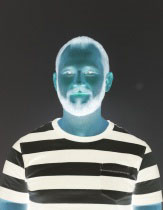

Hello, this is exercice number 1 in I244 by Andrei Pugatšov
This is exercise number 3, remake of exercise 1. Content is the same, but with CSS decoration.
Please hover mouse on me!!
And on me too!
It's made with simple purpose: I want to get some points for my first home work in I244.
If you are interested in source code, then you can find at GitHub.
Mostly it's just a simple test page for showing basisc of HTML.
Important things to create a HTML page
- In HTML 5 you have to define document type by starting it with
<!DOCTYPE html>
- HTML document have to have a
head, where you can define title and charset
- And of course the
body itself, otherwise why to learn HTML? :)
- Don't forget to close
tag that have to be closed, its a very common bug!
Basic HTML text format
HTML offers enough tools to format text:
- Simple text
- Strong text or bold text
- Emphasized text or italic text
- Marked text
- Small text
Deleted text- Inserted text or underlined text
- Subscript text and Superscript text
Different
sizes
of
text
are
available
Code examples can be written in <pre> tag, so it is good to read
And when text is not enough...
You can always add a picture:

HTML is not an Excel, but it can handle tables
Simple table sample
| First column name |
Second column name |
| Bellow is my image inverted |
Bellow is my blck and white inverted image |
|  |
 |
Well, it's definetly not all HTML features, but something to start with